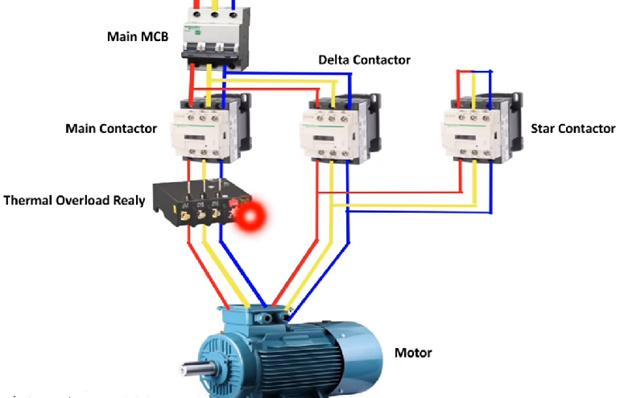

03_Star_Delta - Star-delta: Reduced-voltage start
1. Purpose of star-delta starting
A star-delta starter is a reduced-voltage starting method for suitable three-phase induction motors. It starts the motor with the windings connected in star (Y), then changes the winding connections to delta (Δ) for normal running.
The purpose is to reduce starting current drawn from the supply compared with direct-on-line (DOL) starting.
However, reducing the voltage applied to each motor winding also reduces starting torque. This makes star-delta suitable only when the motor and driven load can accelerate adequately under the reduced starting torque.
Typical applications include suitable pumps, fans, and lightly loaded conveyors.
2. Why change from star to delta?
In a three-phase motor, the relationship between line voltage and winding phase voltage depends on the winding connection.
For a motor supplied by a line voltage \(V_L\):
Star connection
Delta connection
Where:
- \(V_L\) = supply line-to-line voltage.
- \(V\_{ph}\) = voltage across each motor winding.
During star starting, each winding receives approximately 58% of the line voltage it receives when connected in delta at the same supply voltage.
For a 400 V supply:
- Star winding voltage: \(400/\sqrt{3}\approx231\text{ V}\)
- Delta winding voltage: \(400\text{ V}\)
This is why the motor's winding voltage ratings and terminal connections must be checked before a star-delta starter is used. A motor intended to run in delta at the available line voltage must have suitable windings and accessible terminals.
3. Star-delta starter power circuit

A conventional automatic star-delta starter uses three contactors:
- Main contactor (KM1): Connects the motor circuit to the supply.
- Star contactor (KM2): Connects the motor winding ends together to form the star point during starting.
- Delta contactor (KM3): Connects the motor windings in delta for normal running.
It also typically uses a timer, overload protection, short-circuit protection, and electrical or mechanical interlocking.
Conceptual power circuit
THREE-PHASE SUPPLY
L1 L2 L3
| | |
[Protection]
| | |
[Main Contactor]
| | |
U1 V1 W1
MOTOR
U2 V2 W2
| | |
+-----+--+--+-----+
| |
[Star Contactor] [Delta Contactor]
| |
+--- Star point +--- Delta connections
This is a conceptual overview, not a wiring diagram. The exact contactor connections determine whether the motor windings are correctly connected in star and delta. Always use the manufacturer's circuit diagram for the actual starter.
4. Motor terminal connections
A conventional star-delta starter requires a motor with six accessible winding terminals, typically labelled:
- U1 and U2
- V1 and V2
- W1 and W2
These are the two ends of each of the three stator windings.
4.1 Star connection
The three winding ends are joined together to create a common star point.
L1 ---- U1 [ Winding ] U2 ----+
|
L2 ---- V1 [ Winding ] V2 ----+---- Star point
|
L3 ---- W1 [ Winding ] W2 ----+
The diagram is conceptual. Actual terminal links and contactor wiring must follow the motor and starter manufacturer's connection diagram.
4.2 Delta connection
The winding ends are interconnected to form a closed three-phase loop.
U1 -------- W2
\ /
\ /
\ /
Motor
/ \
/ \
V1 -------- U2
W1 and V2 form the
remaining delta junction
This is a simplified representation of the connection principle. For practical wiring, use the terminal connection diagram because the correct pairing and phase sequence are essential.
4.3 Critical nameplate check
Suppose a motor is marked 400/690 V Δ/Y.
This generally means the windings are rated for approximately 400 V in delta or 690 V in star. On a 400 V supply, the motor can normally run in delta, making it a candidate for a 400 V star-delta starting arrangement if its other ratings and connections are suitable.
A motor marked 230/400 V Δ/Y, however, is normally intended to run in star on a 400 V supply. Switching that motor into delta at 400 V would overvoltage its windings.
Never choose star-delta solely because the motor has six terminals. The nameplate and intended running connection must support it.
5. Starting current and torque
Star-delta starting reduces both the starting current drawn from the supply and the motor's starting torque.
5.1 Starting current
For the same motor at the same supply voltage, under the usual idealized comparison:
This is an approximate relationship between the star-start line current and the DOL line current. Actual starting current depends on the motor and circuit characteristics.
For example, suppose a motor would draw 90 A during DOL starting.
The estimated line starting current during star starting is approximately 30 A under these assumptions.
5.2 Starting torque
For a given motor frequency and comparable operating conditions, induction motor torque is approximately proportional to the square of the applied winding voltage.
Since star starting applies approximately \(1/\sqrt{3}\) of the delta winding voltage:
If the motor would produce 90 Nm of starting torque under the compared DOL condition, its approximate star-start torque would be:
This is an illustrative estimate, not a guaranteed motor performance figure.
The main trade-off: Lower starting current comes with lower starting torque. A heavily loaded machine may fail to accelerate in star.
6. Operating sequence
A conventional automatic star-delta starter typically follows this sequence.
| Stage | Main contactor | Star contactor | Delta contactor | Motor condition |
|---|---|---|---|---|
| Stopped | OFF | OFF | OFF | Motor disconnected |
| Star starting | ON | ON | OFF | Reduced-voltage starting |
| Transition | ON | OFF | OFF | Brief transition interval |
| Delta running | ON | OFF | ON | Normal running connection |
| Stop or trip | OFF | OFF | OFF | Motor disconnected |
The timer determines the transition from star to delta. The actual sequence and timing depend on the starter design.
6.1 Start command
When the operator presses START, the control circuit energizes the main and star contactors. The motor windings are connected in star and the motor begins accelerating.
6.2 Star acceleration
The motor accelerates under reduced voltage and reduced torque. The timer runs during this period.
The transition should occur when the motor has accelerated sufficiently for the delta connection to be made safely and effectively.
6.3 Transition
The star contactor opens. The control circuit ensures that the star and delta contactors cannot remain closed together.
In a common open-transition starter, there is a short interval when both star and delta contactors are open while the main contactor remains energized.
6.4 Delta running
The delta contactor closes, reconnecting the motor windings for their intended running configuration. The motor continues operating at the supply frequency and can develop its normal running torque according to its torque-speed characteristics and load.
6.5 Stop or overload trip
A stop command or overload trip should de-energize the appropriate contactor coils and disconnect the motor. The starter must also prevent an unsafe or invalid star-delta switching sequence.
7. Timer and contactor interlocking
Timer function
The timer controls the changeover from star starting to delta running.
The star time must be long enough for the motor to accelerate adequately, but not unnecessarily long. If the motor is still accelerating heavily when the transition occurs, the current and mechanical disturbance during changeover may be excessive.
The timer setting must be determined from actual motor and load behavior, the starter design, and the manufacturer's guidance. There is no universal correct setting for every machine.
Electrical interlocking
The star and delta contactor coils are interlocked using auxiliary contacts so that energizing one prevents energizing the other.
Mechanical interlocking
A mechanical interlock can physically prevent the star and delta contactors from closing simultaneously.
Both interlocking and correct control logic are important. Simultaneous star and delta contactor closure can create a phase-to-phase short circuit through the contactor connections.
The interlock arrangement must be appropriate to the starter design and applicable requirements.
8. Why current spikes can occur during changeover
Star-delta starting does not eliminate all starting-current disturbances.
During open transition:
- The star contactor opens.
- The motor briefly operates without the star connection.
- The delta contactor closes.
- The new winding connection can create a transient current and torque disturbance.
The magnitude depends on the motor's residual magnetic state, speed at transition, switching interval, load, and circuit characteristics.
Symptoms of poor transition include:
- A pronounced current spike.
- Mechanical jerk.
- Contactor chatter or repeated switching.
- Overload trips during changeover.
- Excessive noise or vibration.
Do not assume that increasing the timer setting will solve every changeover fault. The motor may already be accelerating adequately, or the load may simply require more starting torque than star mode can provide.
9. Star-delta starter protection
| Component | Function |
|---|---|
| Short-circuit protective device | Protects the circuit against short circuits according to its rating and coordination |
| Main contactor | Connects and disconnects the motor circuit |
| Star contactor | Establishes the star connection during starting |
| Delta contactor | Establishes the delta running connection |
| Overload relay | Detects sustained overload conditions |
| Timer | Controls the transition sequence |
| Electrical interlock | Prevents incompatible contactor commands |
| Mechanical interlock | Physically prevents simultaneous operation of the interlocked contactors |
| Auxiliary contacts | Provide holding, interlocking, and status functions |
Overload relay placement
Overload relay placement affects the current through the relay and therefore the appropriate setting.
- A relay installed in the line circuit commonly senses motor line current.
- A relay installed inside the delta winding circuit senses winding current, which is lower than line current in delta operation.
For the latter arrangement, the expected winding current is approximately:
The relay setting must follow the actual circuit arrangement and manufacturer instructions. Do not automatically apply the motor nameplate line current to every relay configuration.
Protection must be coordinated with the motor, contactors, cables, starting method, and applicable standards.
10. When star-delta starting is suitable
Star-delta is a possible choice when:
- The motor supports delta running at the available line voltage.
- Six winding terminals are accessible.
- Starting torque demand is low enough for star acceleration.
- The supply benefits from reduced starting current.
- The application can tolerate the changeover behavior.
- The required starting and stopping control is relatively simple.
It is often considered for suitable pumps, fans, and unloaded or lightly loaded machinery.
When it may be unsuitable
Star-delta may be unsuitable when:
- The load needs high torque from standstill.
- The motor cannot accelerate sufficiently in star.
- Smooth, controlled acceleration is required.
- Frequent starts or demanding motion profiles exceed the starter's suitability.
- The motor is not rated for the intended delta running voltage.
- The machine needs continuous variable-speed operation.
For high-inertia or heavily loaded machinery, the required acceleration torque must be evaluated rather than guessed from the motor's rated power.
11. Star-delta versus DOL, soft starter, and VFD
| Characteristic | DOL | Star-delta | Soft starter | VFD |
|---|---|---|---|---|
| Starting method | Full supply voltage | Reduced winding voltage in star | Gradually controls voltage | Controls voltage and frequency |
| Starting current | High | Reduced relative to DOL | Limited or controlled according to settings | Depends on drive, load, and configuration |
| Starting torque | Full-voltage starting torque | Approximately one-third of DOL under idealized comparable conditions | Depends on voltage and control strategy | Can be managed through suitable drive control |
| Changeover transient | No star-delta transition | Possible | No star-to-delta transition | No star-to-delta transition |
| Running speed control | No inherent variable-speed control | No inherent variable-speed control | Generally not for continuous speed control | Yes |
| Hardware complexity | Low | Higher, with three contactors and timer | Moderate | Higher, including drive configuration |
| Typical use | Simple fixed-speed loads | Suitable motors with adequate starting torque | Reduced starting stress | Variable-speed and advanced control applications |
A soft starter and a VFD are not the same device. A soft starter controls motor voltage during starting and often stopping, while a VFD controls output frequency as well as voltage and can regulate operating speed.
12. Common star-delta faults and troubleshooting
| Symptom | Possible causes | First checks |
|---|---|---|
| Motor does not start | Missing supply, open control circuit, active interlock or protection trip | Check control voltage, permissives, and protection status |
| Motor starts in star but never changes to delta | Timer fault, incorrect timer wiring, open delta coil circuit | Check timer operation and delta-contactor control path |
| Motor trips during star starting | Insufficient starting torque, excessive load, incorrect protection setting | Check load, acceleration and relay arrangement |
| Motor trips during changeover | Poor transition timing, wiring fault, incompatible contactor operation | Inspect sequence, interlocks, and contactor condition |
| Very high current during changeover | Incorrect connections, unsuitable transition, contactor overlap or other circuit fault | Stop and verify the approved power and control diagrams |
| Star and delta contactors energize together | Failed interlock, wiring error, control logic fault | Isolate immediately and inspect the interlocking system |
| Motor hums but fails to accelerate | Excessive load, phase loss, incorrect winding connection | Stop promptly and verify supply, connections, and load |
| Motor runs hot | Repeated starts, prolonged acceleration, overload, supply imbalance | Review operating duty, current and cooling |
| Contactor chatters | Low coil voltage, loose connection, incorrect control supply | Check coil voltage and control wiring |
| Motor rotates in the wrong direction | Incorrect phase sequence or winding connection | Isolate and verify connections against the approved drawing |
Practical diagnostic sequence
- Record the exact symptom and whether it occurs during star starting, transition, or delta running.
- Check protective-device and overload status.
- Verify the timer and contactor sequence.
- Confirm that star and delta interlocks operate correctly.
- Inspect the power circuit and motor terminal connections against the approved drawing.
- Check supply voltage and phase condition using approved procedures.
- Assess the mechanical load and whether the motor can accelerate in star.
- Verify relay settings and contactor ratings against the actual circuit.
- Test under controlled conditions after correcting the identified problem.
Never repeatedly restart a motor when a star-delta wiring or interlocking fault is suspected.
13. Maintenance checklist
- Inspect the main, star, and delta contactors for wear, damage, and overheating.
- Verify the timer's function and transition sequence.
- Inspect electrical and mechanical interlocks.
- Check terminals, cables, and motor terminal-box connections.
- Confirm that the motor nameplate supports the installed running connection.
- Verify the overload relay arrangement and setting.
- Inspect enclosure condition, contamination, and ventilation.
- Review transition-related trips and repeated starting attempts.
- Check for loose couplings, excessive load, or mechanical binding.
- Confirm that the installed circuit matches the approved drawing.
Before inspection or repair, apply the required isolation procedure, verify the absence of hazardous voltage, and follow the site's electrical safety requirements.
14. Interview questions and answers
1. What is a star-delta starter?
A reduced-voltage starting method that connects a suitable motor in star during starting and changes to delta for normal running.
2. Why is starting current lower in star?
Each winding receives approximately \(1/\sqrt{3}\) of the delta winding voltage at the same line voltage, reducing the starting current drawn from the supply.
3. How does starting torque compare with DOL?
Under idealized comparable conditions, star starting provides approximately one-third of DOL starting torque because torque is approximately proportional to the square of winding voltage.
4. Why does the motor need six accessible winding terminals?
The starter must change the connections of the three stator windings between star and delta.
5. What is the function of the timer?
It controls the duration of star starting and initiates the changeover to delta.
6. Why must star and delta contactors be interlocked?
To prevent both contactors from closing simultaneously, which can cause a short circuit through the power connections.
7. Can every three-phase motor use a star-delta starter?
No. The motor must have suitable winding ratings, accessible terminals, and a valid delta running configuration for the supply voltage.
8. Why might a motor fail to accelerate in star?
Star starting provides lower torque. The available torque may be insufficient to overcome the load and accelerate the motor.
9. Why can a current spike occur during changeover?
The motor experiences a transition between winding connections, and its electrical and magnetic state at that instant can produce a transient current.
10. What is the difference between star-delta and a soft starter?
Star-delta changes winding connections to reduce starting voltage. A soft starter electronically controls the applied voltage during starting and often stopping.
11. Does a star-delta starter provide variable-speed control?
No. It is primarily a starting method. Normal running speed is determined mainly by supply frequency, motor pole count, slip, and load.
12. What should be checked before setting the star-delta timer?
Motor and load acceleration behavior, the manufacturer's recommendations, the transition characteristics, protection requirements, and the starter design.
15. Practical exercises
Exercise 1: Calculate winding voltage
A suitable motor is supplied by a 400 V three-phase line voltage.
Calculate the winding voltage during star starting.
Answer: Approximately 231 V per winding during star starting.
Exercise 2: Estimate starting current
A motor's DOL starting line current is 120 A. Estimate the star-start line current using the idealized one-third relationship.
Answer: Approximately 40 A, subject to actual motor and circuit characteristics.
Exercise 3: Diagnose a failed transition
A motor starts in star, runs for several seconds, and then trips as it changes to delta.
Check:
- The exact overload or protective-device indication.
- Timer operation and wiring.
- Star and delta contactor interlocking.
- Contactor condition and switching sequence.
- Motor terminal connections.
- Actual motor current during transition.
- Load acceleration and mechanical condition.
Do not simply increase the timer setting without establishing the cause.
Exercise 4: Verify motor suitability
A motor is marked 230/400 V Δ/Y and the available supply is 400 V.
Is a conventional star-delta starter suitable for running this motor in delta at 400 V?
Answer: No. This motor is generally intended to run in star on a 400 V supply. Connecting it in delta at 400 V would apply excessive voltage to its windings.
Exercise 5: Create a starter maintenance record
Record:
- Motor nameplate and intended running connection.
- Main, star, and delta contactor models.
- Timer model and setting.
- Overload relay location and setting.
- Short-circuit protective device.
- Control voltage and circuit drawing number.
- Transition-related alarms and measured current.
- Corrective actions and verification results.
16. Final mental model
Star-delta starting trades reduced supply starting current for reduced starting torque.
Remember the sequence:
- Start in star.
- Allow the motor to accelerate.
- Open the star contactor.
- Change over safely.
- Close the delta contactor.
- Run in delta under normal operating conditions.
For troubleshooting, identify whether the problem occurs during starting, transition, or running. Then examine the relevant contactors, timer, interlocks, protection, winding connections, supply, and mechanical load.
Next topic: 02_PLAN_WISE_2026\02_INDUSTRY3_0\02_Auto_Tech\05_Motor_Control\04_Soft_Starter
04_Soft_Starter - Soft starter: Ramp start without a drive